S2 프로필 · 목표 커버 실제 쓰기 데모
승인 prototype v3.0.0을 기준으로 free staging의 실제 Auth, API, DB, Storage 경로를 실행했다. 운영 배포와 운영 DB 쓰기는 없었다.
staging alias · deployment dpl_8vUvNNqSBhBa2cJ98bnMrRxKNt58
1. 마이페이지 프로필 저장과 reload
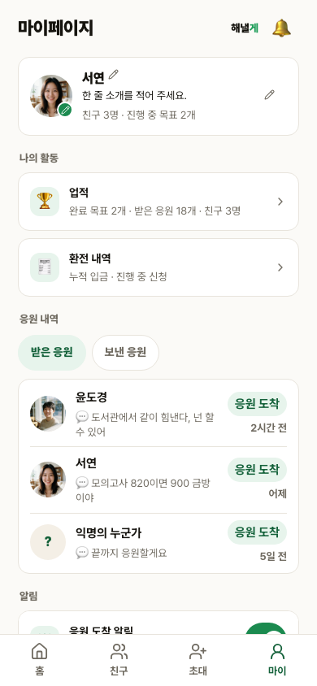
인증된
/my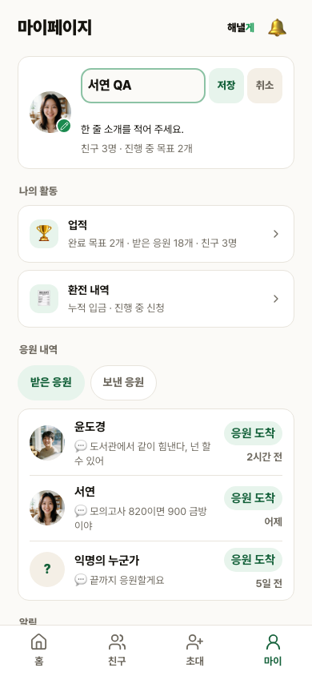
편집 UI 실제 입력
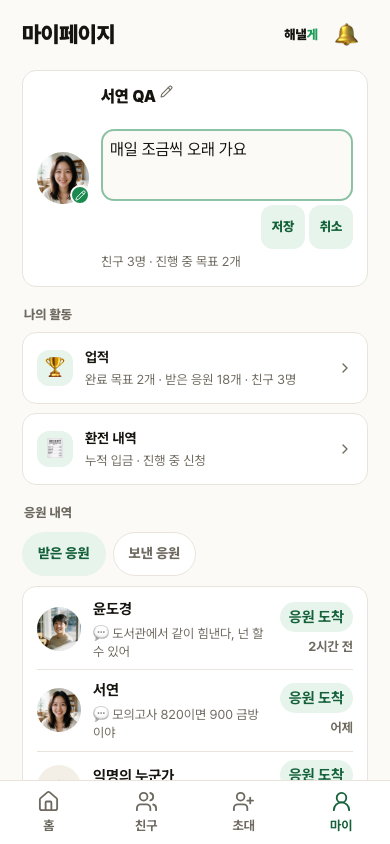
한 줄 소개 실제 입력
이름·소개 영속성 assertion
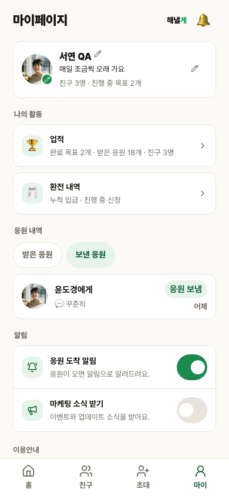
sign→Storage PUT→finalize
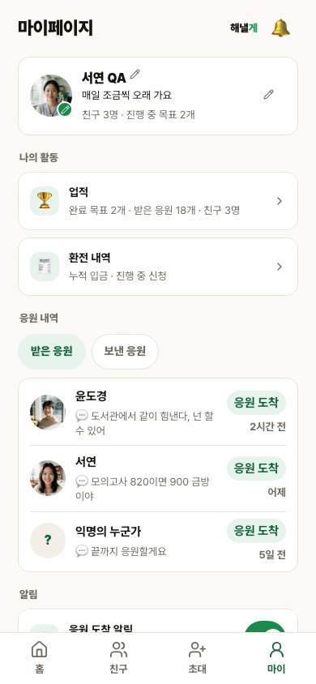
저장 후 reload 완료
2. 같은 390×844 · 같은 상태 시안 대조
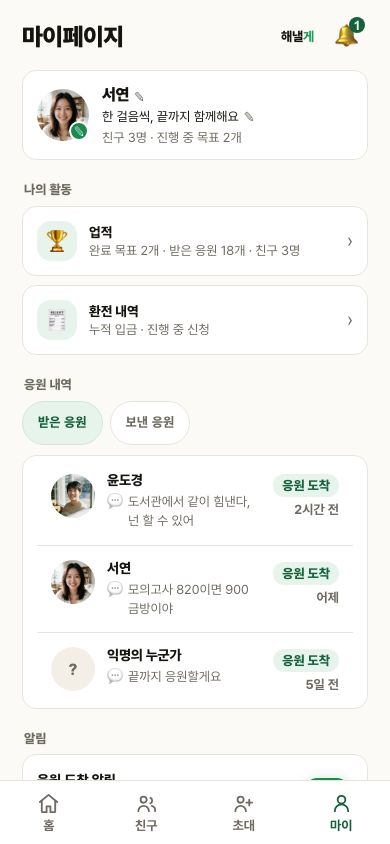
mypage display, scroll top 0
mypage display, scroll top 0
이미지 완전 로드 뒤 캡처했다. 픽셀 변화율 21.53%, 평균 채널 차이 8.22. fixture의 이름·소개·사진·집계 데이터 차이를 포함한다.
3. 프리셋 커버 저장 · reload · 공개 반영
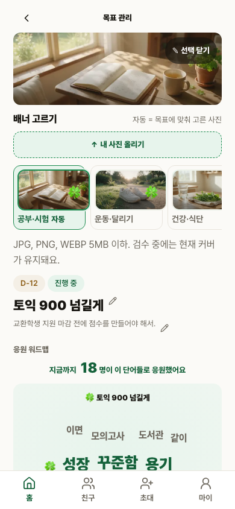
목표 관리 상단
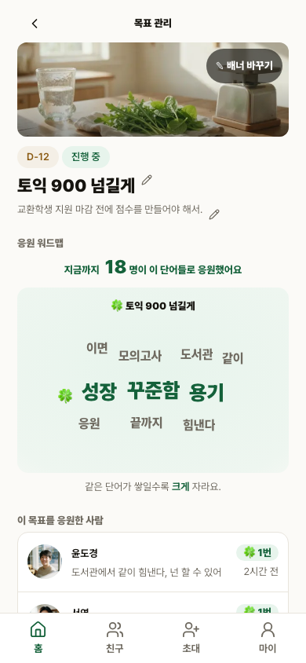
data-preset=health 확인인증된 목표 관리
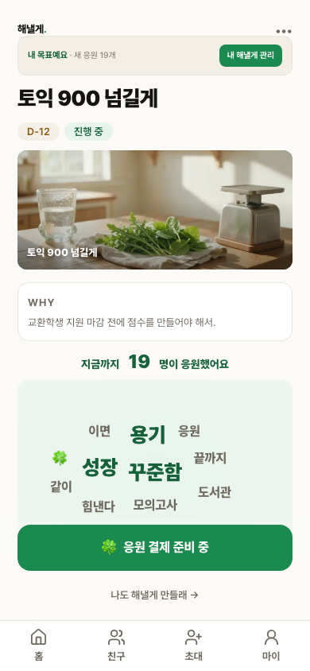
공개 목표에서 동일 preset
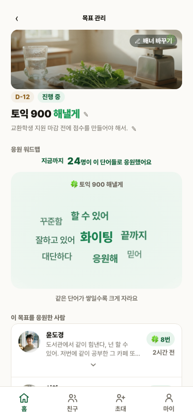
goal-health, scroll top 0
goal-health, scroll top 0
양쪽 모두 390×844, scroll top 0, 건강 display, 이미지 완전 로드, reduced-motion 상태다. 픽셀 변화율 45.14%, 평균 채널 차이 12.05. 승인된 ambient motion DOM 5개는 보존했고 reduced-motion에서만 숨겼다. 실제 화면에 남은 🍀는 장식이 아니라 fixture의 data-wordmap-item keyword다.
4. 실제 Storage REVIEW · 관리자 승인 · 공개 반영
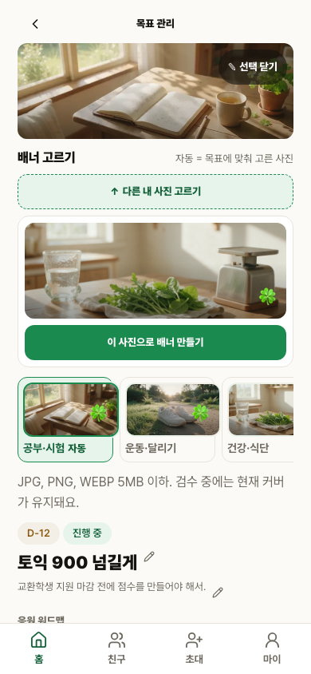
실제 JPEG 선택
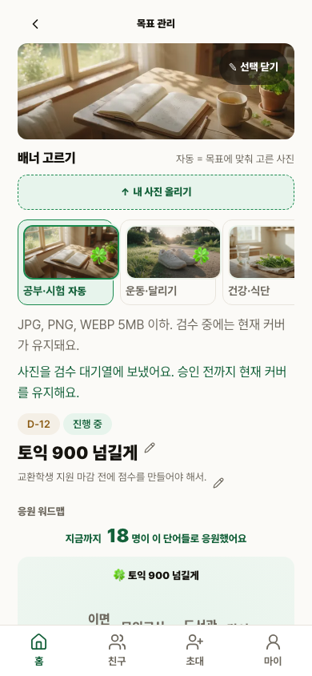
finalize 200, DB REVIEW
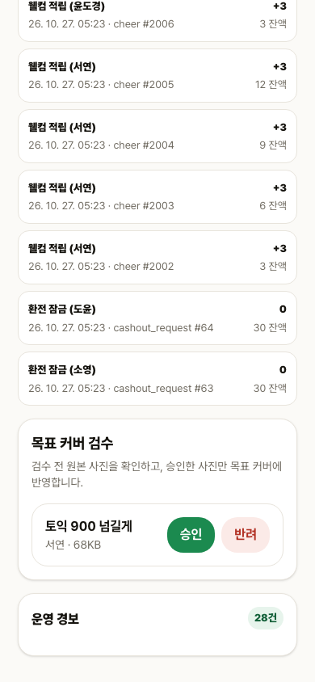
토익 900 넘길게 · 68KB · 승인 CTA 확인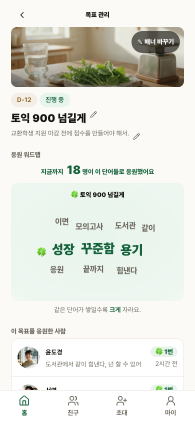
이미지 완전 로드
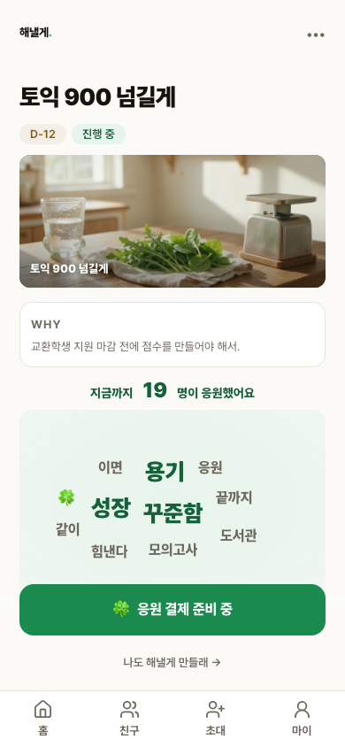
공개 Storage 69,612 bytes
| 경계 | 실제 관찰 |
|---|---|
| 업로드 | sign 200, Storage PUT, finalize 200 |
| 심사 전 | DB REVIEW, quarantine object 69,612 bytes, active cover 불변 |
| 관리자 승인 | DB APPROVED, goal active asset 연결 |
| 공개 반영 | public Storage 69,612 bytes, owner·public 이미지 모두 완전 로드 |
5. 정본 mobile ergonomics와 회귀 경계
/my와 인증된/me/goal/{id}를 각각 360·390·412·600·700·780·820·900·1000px에서 측정했다.- 18/18 모두 13px 미만 글자 0, 본문 토큰 16px, 44px 미만 누름 0, active 100%, 가로 overflow 0, fixed overlap 0, 하단 clearance 80px다.
median_font=13은 참고값이다. 합격 기준으로 사용하지 않았다.- S2 제품 소스는
globals.css와Wordmap.tsx만 변경했다. 현재 파일과 최종 staging snapshot의 두 파일 diff exit code는 각각 0이다. - 마지막 reduced-motion CSS까지 포함한 최종 소스로 QA 계약과 unit 전체를 1회 재실행해 78파일 439/439, exit 0을 확인했다.
- S1 공용 화면은 최종 전체 회귀로 보존했고 S3는 수정하지 않았다.
6. 독립 QA v1 반려 해소 근거
| 결함 | 보완 근거 | 현재 상태 |
|---|---|---|
| QAS2-01 | PW-05가 대상 review card를 scrollIntoViewIfNeeded한 뒤 목표명·asset 정보·승인 CTA와 viewport 경계를 assertion하고 15번 PNG를 캡처했다. | PASS · 해소 |
| QAS2-02 | 승인본과 실제 화면을 동일 reduced-motion 조건으로 재촬영했다. static heart 0, owner mark hidden, ambient 5개는 DOM 보존·reduced-motion에서 display none. 남은 🍀는 실제 keyword임을 DOM 로그로 확인했다. | PASS · 해소 |
7. 재현 로그와 판정 경계
- F3 최종 로그, 2 passed
- PW-03 최종 영향 검증, 1 passed
- F4 최종 명시 verify, 2 passed
- 최종 소스 전체 회귀, 78파일 439/439
- 독립 QA v1 반려 원문 렌더
- 독립 QA v2 PASS 보고서 렌더
- source manifest 읽기 화면
- 프로필 픽셀 대조 읽기 화면
- 커버 픽셀 대조 읽기 화면
- 최종 staging health 읽기 화면
독립 qa-verifier가 QAS2-01·02 해소와 필수 기능·회귀·디자인 QA를 확인했다. S2는 closed다.
기반 포맷: S1 실제 데모 허브와 source manifest. 최종 판정 2026-10-27 11:16 KST. 모델 gpt-codex(API model ID 미노출), 에이전트 qa-verifier, 스킬 qa·review.